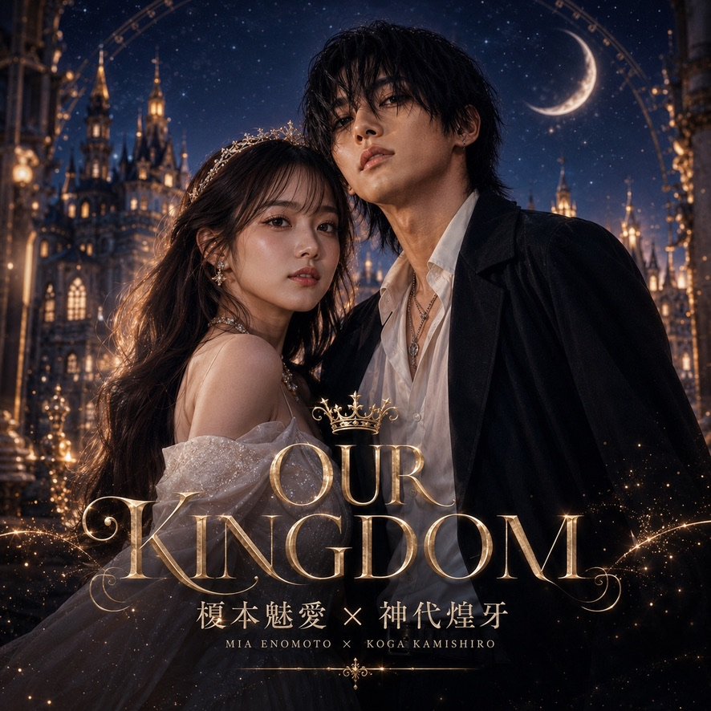

SUZUKA Original AI Artist / Solo
神代煌牙
KOGA KAMISHIRO
愛する人を守るために歌う、SUZUKAの男性ソロAIアーティスト。

世界観
大切な人を守る黒の騎士。静けさの奥にある誓いと、消えない記憶を描く。
音楽性
シネマティックJ-POP、ロック、ダークポップを融合した重厚な物語音楽。
Cinematic Rock / Dark Pop / Dark Rock / J-POP / J-ROCK / シネマティック / ダークポップ / ファンタジーポップ / ロック
最新曲
SUZUKAおすすめ
初めて聴くなら、この3曲
正本のfeatured・代表設定・recommendationWeight・公開日の順で決定的に選んでいます。実人気順位ではありません。
公開作品一覧



Streaming Release
STREAMING RELEASE · 配信予定
STREAMING RELEASE · NOW STREAMING / 配信開始
Upcoming
現在確認済みのUpcomingはありません。
Official MV / Shorts / News / Gallery
OFFICIAL YOUTUBE